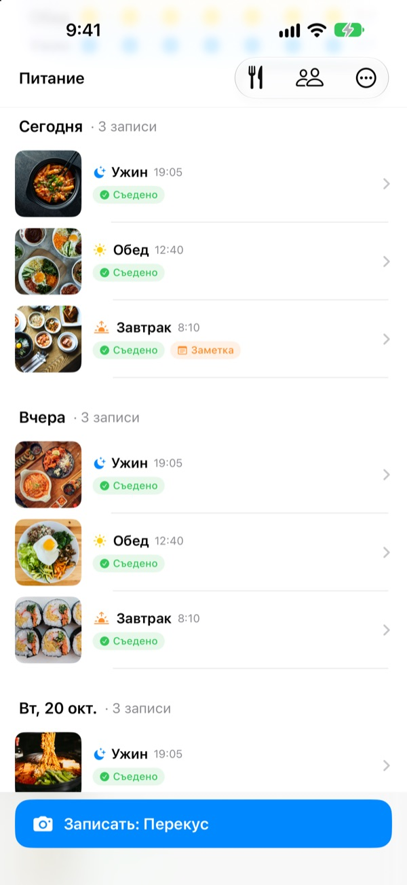
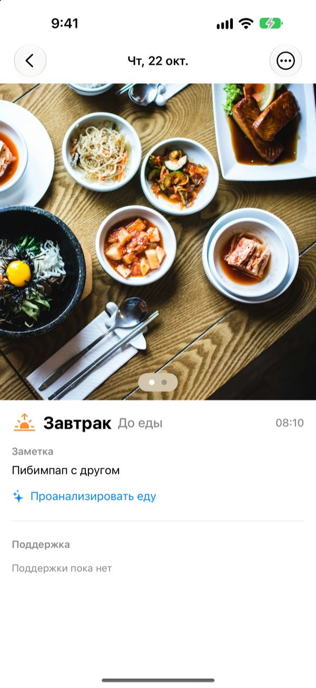
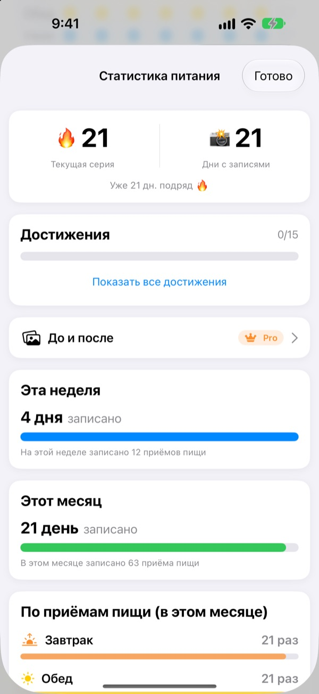
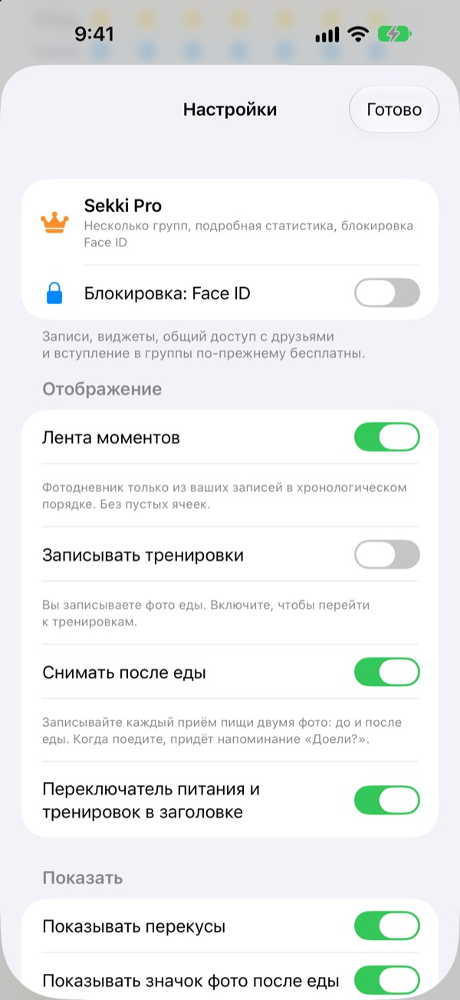

Один снимок перед едой,
и запись готова
Sekki смотрит на время съёмки и сам относит фото к завтраку, обеду, ужину или перекусу. Записали хотя бы один приём пищи за день, и серия продолжается.
Записи, статистика, виджеты и общий доступ с друзьями бесплатны.

Попробуйте сами
Выберите время съёмки и нажмите кнопку записи. Как и в приложении, на кнопке уже написан приём пищи для этого времени.
Бросали дневник питания через три дня?
Пропустили завтрак, забыли про ужин, и пустые клетки начинают раздражать, пока вы не удалите приложение. В Sekki нет пустых клеток. По порядку копятся только записанные приёмы пищи, и одного снимка достаточно, чтобы день засчитался.
Сфотографировали, и приём пищи определён
По времени съёмки Sekki относит фото к завтраку, обеду, ужину или перекусу. Можно добавить фото до и после еды, запись без фото или заметку.
Еда на фото распознаётся прямо на устройстве бесплатно, и снимки не покидают телефон.

Записи, которые не убывают
Один приём пищи в день сохраняет серию, а общее число дней с записями никогда не уменьшается. Недельная и месячная статистика показывает, сколько дней и приёмов пищи записано, а не процент выполнения.
По пути собираются достижения вроде «7 дней подряд» и «Жаворонок».

Только нужные приёмы пищи и без открытия приложения
Выберите, о каких приёмах пищи напоминать, и настройте время под свой распорядок. Сделали фото до еды, и отметить «Съедено» можно прямо из уведомления.
Записывайте через кнопку действия, Siri, Быстрые команды или виджет, добавляйте друзей по коду и поддерживайте друг друга эмодзи и комментариями.

Три шага, чтобы начать
- 1
Выберите приёмы пищи
При первом запуске Sekki спросит, о чём напоминать. Потом это можно изменить в настройках.
- 2
Снимок перед едой
На кнопке записи уже указан приём пищи для текущего времени. Нажали, сняли, готово.
- 3
Поели, отметьте
Нажмите «Съедено» в уведомлении или виджете либо добавьте фото после еды.
Как записывать, не открывая приложение
- Уведомление
- После фото до еды отметьте «Съедено» прямо из уведомления
- Виджет экрана «Домой»
- Число записей за сегодня и текущий приём пищи, плюс кнопка «Съедено»
- Виджеты экрана блокировки
- Прямоугольный, круглый и строкой
- Кнопка действия · Siri · Быстрые команды
- Отметить «Съедено» одной кнопкой или одной фразой
- Сохранение в «Фото»
- Включите в настройках, и еда и тренировки сохранятся в отдельные альбомы Sekki
- Режим тренировок
- Тренировки хранятся отдельно от еды, а число тренировок за месяц видно сразу
Кнопка «Съедено» на виджете работает в iOS 17 и новее.
Записи бесплатны. Sekki Pro покажет больше.
Бесплатно
- Фото-записи с автоматическим определением приёма пищи, фото до и после, заметки
- Серии, общее число дней, недельная и месячная статистика, достижения
- Напоминания о выбранных приёмах пищи и «Съедено» без открытия приложения
- Виджеты, кнопка действия, Siri и Быстрые команды
- Общий доступ к еде и тренировкам с друзьями, эмодзи и комментарии
- Одна своя группа, вступать в другие можно без ограничений
- Распознавание еды на устройстве
Sekki Pro
- Несколько групп: семья, работа, команда по спорту
- Сравнение еды несколько недель назад и сейчас рядом
- Блюда, которые вы едите чаще всего
- Блокировка приложения через Face ID или Touch ID
Годовая или месячная подписка либо пожизненный доступ одной покупкой
Подписка продлевается автоматически, если не отменить её минимум за 24 часа до конца периода. Отменить можно в любой момент в Настройках > Аккаунт Apple > Подписки. Условия использования: m1zz.github.io/RoutineCamera/ru/terms.html
Частые вопросы
Где хранятся фото?
На вашем устройстве. Если включить в настройках «Автоматически сохранять в «Фото»», они также попадут в альбомы Sekki. Пока включено «Делиться моим питанием» (по умолчанию включено), фото загружаются в iCloud, чтобы их видели добавленные друзья. Отключить можно в Настройках > Аккаунт и общий доступ.
Как добавить друзей?
На экране «Друзья» поделитесь своим кодом из шести символов и введите код друга. Можно вставить сразу несколько кодов через запятую.
Как поддержать друга?
Откройте приём пищи друга и оставьте эмодзи или короткий комментарий. Если он ещё ничего не записал, нажмите на пустую ячейку, чтобы мягко напомнить.
Прерывается ли серия, если пропустить приём пищи?
Нет. Запишите за день любой приём пищи, включая перекус, и серия продолжится. Даже если пропустить целый день, общее число дней с записями не уменьшится.
Не приходят уведомления.
Проверьте, что уведомления Sekki разрешены в Настройках iOS > Уведомления и что на устройстве выполнен вход в iCloud. Время напоминаний меняется в настройках приложения.
Отправляются ли фото на сервер для распознавания еды?
Нет. Распознавание идёт на устройстве, и фото не покидают телефон. Бесплатно и без ограничений.
Как удалить аккаунт и данные?
Друзья > Аккаунт > Удалить аккаунт. Аккаунт и данные о питании на сервере будут удалены без возможности восстановления. Если что-то пойдёт не так, напишите нам.
Как отменить подписку?
В Настройках > Аккаунт Apple > Подписки. Подписка продлевается автоматически, если не отменить её минимум за 24 часа до конца периода. Пожизненный доступ оплачивается один раз.
Ошибки, идеи и вопросы по аккаунту: пишите на leeo@kakao.com или в директ Instagram @lee25_ios. Обычно отвечаем за день-два.